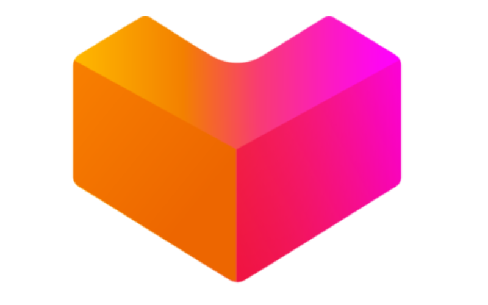

| Ketentuan | |
 | |
|---|---|---|---|
| Visibility of System Status (Umpan Balik) | Shopee menyediakan pembaruan realtime pada status pesanan, notifikasi, dan umpan balik yang jelas selama transaksi berlangsung. Antarmuka dapat mengonfirmasi input seperti menambahkan barang ke keranjang atau menyelesaikan pembelian. | Tokopedia juga menawarkan pembaruan realtime dan notifikasi, dengan pesan yang jelas untuk status pesanan, konfirmasi pembayaran, dan pelacakan pengiriman. Aplikasi ini dirancang untuk memberikan umpan balik instan kepada pengguna. | Visibilitas status sistem Lazada juga kuat, dengan notifikasi instan untuk status pesanan, pembayaran, dan pengiriman. Antarmuka responsif dan memberikan umpan balik untuk tindakan pengguna. |
| Match Between System and the Real World (Kesesuaian Antara Sistem dan Dunia Nyata) | Shopee menggunakan bahasa dan istilah yang akrab bagi pengguna, membuat navigasi dan pemahaman menjadi mudah. Kategori, deskripsi produk, dan antarmuka pengguna selaras dengan harapan pengguna. | Tokopedia menggunakan bahasa dan istilah local (kasual), sehingga intuitif bagi pengguna Indonesia. Desain dan kontennya mencerminkan kebiasaan belanja dan terminologi lokal. | Lazada juga sesuai dengan bahasa lokal dan harapan pengguna. Aplikasi ini menggunakan bahasa yang jelas dan langsung yang dikenal oleh pengguna, sehingga mudah untuk dinavigasi dan dipahami. |
| User Control and Freedom (Kontrol dan Kebebasan Pengguna) | Shopee memberikan pengguna opsi untuk membatalkan pesanan, memodifikasi keranjang sebelum checkout, dan mengembalikan produk. Ini memberikan instruksi yang jelas dan memungkinkan pengguna untuk membatalkan tindakan dengan mudah. | Tokopedia menawarkan fleksibilitas serupa, dengan opsi untuk membatalkan, mengembalikan, dan memodifikasi pesanan. Pengguna dapat dengan mudah bernavigasi dalam aplikasi, dengan opsi yang jelas untuk membatalkan atau mengulangi tindakan. | Lazada memungkinkan pengguna untuk membatalkan pesanan, mengembalikan produk, dan memodifikasi keranjang. Aplikasi ini menyediakan opsi yang jelas untuk membatalkan tindakan dan memberi pengguna kontrol atas pengalaman belanja mereka. |
| Consistency and Standards (Konsistensi dan Standar) | Shopee: Shopee menjaga desain dan bahasa yang konsisten di seluruh aplikasi. Ikon, tombol, dan tindakan mengikuti format standar, mengurangi kebingungan bagi pengguna. | Tokopedia: Tokopedia juga memastikan konsistensi dalam desain dan terminologi. Antarmuka seragam, dan tindakan dapat diprediksi, sesuai dengan standar yang ada. | Lazada: Desain dan bahasa Lazada konsisten, dengan ikon dan tindakan standar. Aplikasi ini mengikuti standar industri, membuatnya mudah bagi pengguna untuk memahami dan menavigasi. |
| Error Prevention (Pencegahan Kesalahan) | Shopee: Shopee menerapkan langkah-langkah pencegahan seperti konfirmasi sebelum menyelesaikan pesanan dan instruksi yang jelas untuk mengurangi kesalahan pengguna. Aplikasi ini membimbing pengguna melalui proses untuk meminimalkan kesalahan. | Tokopedia: Tokopedia menggunakan pesan konfirmasi dan panduan langkah demi langkah untuk mencegah kesalahan. Aplikasi ini memberikan peringatan dan pemeriksaan untuk memastikan pengguna sadar akan tindakan mereka. | Lazada: Lazada mencakup langkah-langkah konfirmasi dan instruksi yang jelas untuk mencegah kesalahan. Desain aplikasi bertujuan untuk membimbing pengguna dan mengurangi kemungkinan kesalahan. |
| Recognition Rather than Recall (Pengakuan Lebih Baik Daripada Mengingat) | Shopee: Antarmuka Shopee dirancang agar intuitif walau terkesan sangat ramai, dengan ikon dan kategori yang mudah dikenali yang mengurangi kebutuhan pengguna untuk mengingat informasi. Aplikasi ini menampilkan opsi dan saran yang relevan berdasarkan perilaku pengguna. | Tokopedia: Tokopedia berfokus pada kemudahan penggunaan, dengan desain yang mengutamakan friendliness. Pengguna dapat dengan cepat menemukan apa yang mereka butuhkan tanpa harus mengingat informasi dari interaksi sebelumnya. | Lazada: Desain Lazada mendukung pengakuan, dengan ikon dan kategori yang jelas. Aplikasi ini meminimalkan kebutuhan pengguna untuk mengingat detail, menyediakan saran dan opsi yang relevan. |
| Flexibility and Efficiency of Use (Fleksibilitas dan Efisiensi Penggunaan) | Shopee: Shopee memenuhi kebutuhan pengguna pemula dan berpengalaman dengan fitur seperti saran pencarian, filter, dan pintasan. Aplikasi ini menawarkan opsi aksesibilitas untuk kebutuhan pengguna yang berbeda. | Tokopedia: Tokopedia menyediakan fleksibilitas dengan berbagai opsi pencarian dan filter, memenuhi kebutuhan pengguna pemula dan lanjutan. Aplikasi ini mencakup fitur aksesibilitas untuk mengakomodasi kebutuhan pengguna yang beragam. | Lazada: Lazada menawarkan navigasi yang efisien untuk semua pengguna, dengan opsi pencarian dan filter yang dapat disesuaikan. Aplikasi ini mencakup fitur untuk mendukung pengguna dengan kebutuhan dan preferensi yang berbeda. |
| Aesthetic and Minimalist Design (Desain Estetik dan Minimalis) | Shopee: Desain Shopee terkesan sangat ramai, menyajikan berbagai informasi untuk membuat pengguna lebih persuasif untuk meningkatkan daya jual. Antarmuka ini menarik secara visual. | Tokopedia: Tokopedia cukup memiliki desain minimalis, dengan fokus pada informasi penting. Tata letak aplikasi ini sederhana dan mudah digunakan. | Lazada: Lazada juga mengadopsi pendekatan minimalis, memastikan antarmuka bersih dan mudah dinavigasi. Desain ini menyoroti informasi penting tanpa membebani pengguna. |
| Help Users Recognize, Diagnose, and Recover from Errors (Membantu Pengguna Mengenali, Mendiagnosis, dan Memulihkan dari Kesalahan) | Shopee: Shopee menyediakan pesan kesalahan yang jelas dan instruksi untuk menyelesaikan masalah. Aplikasi ini menawarkan dukungan melalui FAQ dan opsi layanan pelanggan. | Tokopedia: Tokopedia mencakup pesan kesalahan yang membantu dan solusi, membimbing pengguna untuk memperbaiki kesalahan. Fitur dukungan aplikasi ini mudah diakses. | Lazada: Lazada menawarkan pesan kesalahan yang jelas dan opsi pemulihan, dengan fitur bantuan dan dukungan yang mudah diakses. Aplikasi ini membimbing pengguna untuk menyelesaikan masalah. |
| Help and Documentation (Bantuan dan Dokumentasi) | Shopee: Shopee menyediakan dokumentasi bantuan yang komprehensif dan bagian FAQ yang lengkap. Pengguna dapat mengakses dukungan pelanggan melalui chat dan email. | Tokopedia: Tokopedia menawarkan dokumentasi yang detail dan bagian FAQ yang membantu. Aplikasi ini mencakup berbagai opsi dukungan, termasuk live chat dan dukungan email. | Lazada: Lazada mencakup dokumentasi bantuan yang luas dan FAQ. Aplikasi ini menyediakan berbagai saluran dukungan, termasuk chat, email, dan dukungan telepon. |
17220905Anggreny Rehmalem Tarigan
17220913Adelia Puspita Sari
17220714Muhammad Fargazzi
17221262Muhammad Luthfi Fahrezi
17220795Popy Fatikasari